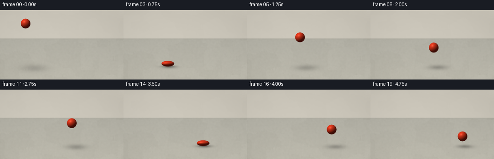
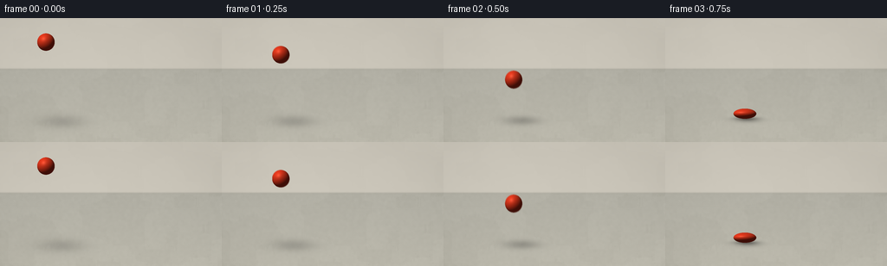

CODING AGENTS AS PIXEL WORLD MODELS
traex/GPT-6.1-Sol · mechanics_0036
点击播放 · 原生 RGB 像素
逐轮保存的候选
回放视频、检查图与代码变化。
每份候选均可单独播放。实际图片检查记录在下方工具轨迹中。
候选 01播放与检查图
点击播放 · 原生 RGB 像素


展开代码变化
--- 上一保存版本
+++ 本次保存版本
@@ -0,0 +1,145 @@
+from pathlib import Path
+import json
+import numpy as np
+from PIL import Image, ImageFilter
+from artifact_io import save
+
+ROOT = Path(__file__).resolve().parent
+SPEC = json.loads((ROOT / 'task_spec.json').read_text())
+W, H = SPEC['width'], SPEC['height']
+S = 3
+w, h = W*S, H*S
+Y, X = np.mgrid[0:h, 0:w].astype(float)
+X = (X+.5)/S
+Y = (Y+.5)/S
+rng = np.random.default_rng(731)
+
+def noise(scale, blur):
+ a = rng.normal(0, 1, (h, w))
+ im = Image.fromarray(np.uint8(np.clip(a*28+128, 0, 255))).filter(ImageFilter.GaussianBlur(blur*S))
+ out = np.array(im).astype(float)-128
+ return out/(np.std(out)+1.e-9)*scale
+
+# A restrained, softly sunlit concrete courtyard. Texture stays fixed in space.
+large = noise(1.35, 10)
+medium = noise(.72, 1.2)
+fine = rng.normal(0, .6, (h, w))
+wall = np.stack([198+.055*Y, 193+.055*Y, 181+.053*Y], axis=-1)
+wall += (large*.46+medium*.20+fine*.13)[..., None]
+wall += (4*np.exp(-((X-66)/150)**2))[..., None]
+floor = np.stack([178+.13*(Y-58), 176+.12*(Y-58), 165+.10*(Y-58)], axis=-1)
+floor += (large+medium+fine)[..., None]
+# Faint sand grains and aggregate, projected onto the receding surface.
+for _ in range(640):
+ xx = rng.uniform(-10, 267)
+ yy = rng.uniform(58, 148)
+ size = rng.uniform(.13, .4)*(.25+(yy-58)/90)
+ strength = rng.uniform(-7, 3)
+ patch = np.exp(-((X-xx)**2+(Y-yy)**2)/(2*size**2))
+ floor += (strength*patch)[..., None]
+blend = np.clip((Y-58)/1.7, 0, 1)
+background = wall*(1-blend[...,None])+floor*blend[...,None]
+# The wall meets the slab behind the action, with a softened ambient crevice.
+background -= (3.6*np.exp(-((Y-59)/1.4)**2))[..., None]
+# A fine, unobtrusive expansion joint in the distant concrete.
+line_y = 76.5 + .023*(X-128)
+joint = np.exp(-((Y-line_y)/.25)**2)
+background -= (1.8*joint)[...,None]
+vignette = 1 - .042*((X-125)/175)**2 - .022*((Y-75)/105)**2
+background *= vignette[...,None]
+
+R = 10.1
+GROUND = 117.0
+G = 230.0
+hits = [.75, 2.25, 3.5, 4.5]
+contact = .085
+
+def state(t):
+ # A downward throw, then ballistic flights with declining rebound energy.
+ if t < hits[0]-contact/2:
+ free_t = hits[0]-contact/2
+ height0 = 79.0
+ down = (height0-.5*G*free_t**2)/free_t
+ z = height0-down*t-.5*G*t*t
+ vy = down+G*t
+ squash = 0.0
+ else:
+ chosen = None
+ for hit in hits:
+ if abs(t-hit) <= contact/2:
+ chosen = hit
+ break
+ if chosen is not None:
+ z = 0.0
+ vy = 0.0
+ squash = np.cos((t-chosen)/contact*np.pi)**2
+ else:
+ index = max(i for i, hit in enumerate(hits) if hit < t)
+ start = hits[index]+contact/2
+ end = (hits[index+1]-contact/2) if index+1 < len(hits) else 5.16
+ u = t-start
+ duration = end-start
+ z = max(0.0, .5*G*u*(duration-u))
+ vy = G*(u-duration/2)
+ squash = 0.0
+ x = 53 + 43*(1-np.exp(-t/.92)) + 20*t
+ # Volume-preserving elastic deformation; compression is confined to impact.
+ if squash > 0:
+ ry = R*(1-.42*squash)
+ rx = R/np.sqrt(1-.42*squash)
+ else:
+ stretch = min(.09, abs(vy)/190*.09)*np.clip(1-z/60, .2, 1)
+ ry = R*(1+stretch)
+ rx = R/np.sqrt(1+stretch)
+ cy = GROUND-ry-z
+ return x, cy, rx, ry, z, vy
+
+light = np.array([-.48, -.66, .58]); light /= np.linalg.norm(light)
+halfv = light+np.array([0,0,1]); halfv /= np.linalg.norm(halfv)
+
+def render(t):
+ cx, cy, rx, ry, elevation, velocity = state(t)
+ out = background.copy()
+ # Cast shadow: compact dark contact patch, broader pale shadow in the air.
+ sx = cx+3+elevation*.19
+ sy = GROUND+1.0+elevation*.033
+ spreadx = 10.1+elevation*.11
+ spready = 2.2+elevation*.04
+ shadow = (.27*np.exp(-elevation/115))*np.exp(-.5*((X-sx)/spreadx)**2-.5*((Y-sy)/spready)**2)
+ tight = .22*np.exp(-elevation/5)*np.exp(-.5*((X-cx-1)/(rx*.66))**2-.5*((Y-GROUND+.2)/1.18)**2)
+ out *= (1-shadow-tight)[...,None]
+ u=(X-cx)/rx
+ v=(Y-cy)/ry
+ r2=u*u+v*v
+ inside=r2 < 1
+ nz=np.sqrt(np.maximum(0,1-r2))
+ normals=np.stack([u/rx,v/ry,nz/R],axis=-1)
+ normals/=np.maximum(np.linalg.norm(normals,axis=-1,keepdims=True),1.e-8)
+ diffuse=np.clip(np.sum(normals*light,axis=-1),0,1)
+ ndoth=np.clip(np.sum(normals*halfv,axis=-1),0,1)
+ # Subtle rubber grain and soft specular reflections, not a metallic sphere.
+ grain=1+.012*np.sin(u*134+np.sin(v*70))*np.sin(v*142+nz*74)
+ base=np.array([231.,57.,29.])
+ illumination=.27+.73*diffuse
+ color=base*illumination[...,None]*grain[...,None]
+ color += (9*np.maximum(0,-normals[...,1])*(1-diffuse))[...,None]*np.array([1.,.86,.68])
+ color += (26*ndoth**20+13*ndoth**65)[...,None]*np.array([1.,.88,.76])
+ fresnel=(1-nz)**4
+ color += (3.5*fresnel)[...,None]*np.array([.85,.89,1.])
+ # Barely visible molding trace rotates as the ball spins.
+ angle=t*3.2+.8
+ plane=u*np.cos(angle)*.24+v*.9+nz*np.sin(angle)*.43
+ seam=np.exp(-(plane/.012)**2)
+ color *= (1-.024*seam)[...,None]
+ out[inside]=color[inside]
+ return np.uint8(np.clip(out,0,255))
+
+frames=[]
+for i in range(SPEC['frames']):
+ t=i/SPEC['fps']
+ # A short shutter preserves one crisp moving ball while softening fast travel.
+ samples=[render(max(0,t+dt)).astype(np.float32) for dt in [-.006,0,.006]]
+ frame=np.uint8(np.clip(.18*samples[0]+.64*samples[1]+.18*samples[2],0,255))
+ frames.append(np.asarray(Image.fromarray(frame).resize((W,H),Image.Resampling.LANCZOS)))
+save(np.stack(frames).astype(np.uint8), ROOT)
+print(f'Saved {len(frames)} RGB frames at {W}x{H}.')
可观测工具轨迹
实际执行的命令与返回图片。
命令 1exit 0
/bin/bash -lc "ls -la && cat prompt.txt && printf '\\n---RULES---\\n' && cat GENERATION_RULES.md && printf '\\n---SPEC---\\n' && cat task_spec.json"
命令 2exit 0
/bin/bash -lc 'cat artifact_io.py && cat player_template.html'
命令 3exit 0
/bin/bash -lc "cat > generate.py <<'PY'
from pathlib import Path
import json
import numpy as np
from PIL import Image, ImageFilter
from artifact_io import save
ROOT = Path(__file__).resolve().parent
SPEC = json.loads((ROOT / 'task_spec.json').read_text())
W, H = SPEC['width'], SPEC['height']
S = 3
w, h = W*S, H*S
Y, X = np.mgrid[0:h, 0:w].astype(float)
X = (X+.5)/S
Y = (Y+.5)/S
rng = np.random.default_rng(731)
def noise(scale, blur):
a = rng.normal(0, 1, (h, w))
im = Image.fromarray(np.uint8(np.clip(a*28+128, 0, 255))).filter(ImageFilter.GaussianBlur(blur*S))
out = np.array(im).astype(float)-128
return out/(np.std(out)+1.e-9)*scale
# A restrained, softly sunlit concrete courtyard. Texture stays fixed in space.
large = noise(1.35, 10)
medium = noise(.72, 1.2)
fine = rng.normal(0, .6, (h, w))
wall = np.stack([198+.055*Y, 193+.055*Y, 181+.053*Y], axis=-1)
wall += (large*.46+medium*.20+fine*.13)[..., None]
wall += (4*np.exp(-((X-66)/150)**2))[..., None]
floor = np.stack([178+.13*(Y-58), 176+.12*(Y-58), 165+.10*(Y-58)], axis=-1)
floor += (large+medium+fine)[..., None]
# Faint sand grains and aggregate, projected onto the receding surface.
for _ in range(640):
xx = rng.uniform(-10, 267)
yy = rng.uniform(58, 148)
size = rng.uniform(.13, .4)*(.25+(yy-58)/90)
strength = rng.uniform(-7, 3)
patch = np.exp(-((X-xx)**2+(Y-yy)**2)/(2*size**2))
floor += (strength*patch)[..., None]
blend = np.clip((Y-58)/1.7, 0, 1)
background = wall*(1-blend[...,None])+floor*blend[...,None]
# The wall meets the slab behind the action, with a softened ambient crevice.
background -= (3.6*np.exp(-((Y-59)/1.4)**2))[..., None]
# A fine, unobtrusive expansion joint in the distant concrete.
line_y = 76.5 + .023*(X-128)
joint = np.exp(-((Y-line_y)/.25)**2)
background -= (1.8*joint)[...,None]
vignette = 1 - .042*((X-125)/175)**2 - .022*((Y-75)/105)**2
background *= vignette[...,None]
R = 10.1
GROUND = 117.0
G = 230.0
hits = [.75, 2.25, 3.5, 4.5]
contact = .085
def state(t):
# A downward throw, then ballistic flights with declining rebound energy.
if t < hits[0]-contact/2:
free_t = hits[0]-contact/2
height0 = 79.0
down = (height0-.5*G*free_t**2)/free_t
z = height0-down*t-.5*G*t*t
vy = down+G*t
squash = 0.0
else:
chosen = None
for hit in hits:
if abs(t-hit) <= contact/2:
chosen = hit
break
if chosen is not None:
z = 0.0
vy = 0.0
squash = np.cos((t-chosen)/contact*np.pi)**2
else:
index = max(i for i, hit in enumerate(hits) if hit < t)
start = hits[index]+contact/2
end = (hits[index+1]-contact/2) if index+1 < len(hits) else 5.16
u = t-start
duration = end-start
z = max(0.0, .5*G*u*(duration-u))
vy = G*(u-duration/2)
squash = 0.0
x = 53 + 43*(1-np.exp(-t/.92)) + 20*t
# Volume-preserving elastic deformation; compression is confined to impact.
if squash > 0:
ry = R*(1-.42*squash)
rx = R/np.sqrt(1-.42*squash)
else:
stretch = min(.09, abs(vy)/190*.09)*np.clip(1-z/60, .2, 1)
ry = R*(1+stretch)
rx = R/np.sqrt(1+stretch)
cy = GROUND-ry-z
return x, cy, rx, ry, z, vy
light = np.array([-.48, -.66, .58]); light /= np.linalg.norm(light)
halfv = light+np.array([0,0,1]); halfv /= np.linalg.norm(halfv)
def render(t):
cx, cy, rx, ry, elevation, velocity = state(t)
out = background.copy()
# Cast shadow: compact dark contact patch, broader pale shadow in the air.
sx = cx+3+elevation*.19
sy = GROUND+1.0+elevation*.033
spreadx = 10.1+elevation*.11
spready = 2.2+elevation*.04
shadow = (.27*np.exp(-elevation/115))*np.exp(-.5*((X-sx)/spreadx)**2-.5*((Y-sy)/spready)**2)
tight = .22*np.exp(-elevation/5)*np.exp(-.5*((X-cx-1)/(rx*.66))**2-.5*((Y-GROUND+.2)/1.18)**2)
out *= (1-shadow-tight)[...,None]
u=(X-cx)/rx
v=(Y-cy)/ry
r2=u*u+v*v
inside=r2 < 1
nz=np.sqrt(np.maximum(0,1-r2))
normals=np.stack([u/rx,v/ry,nz/R],axis=-1)
normals/=np.maximum(np.linalg.norm(normals,axis=-1,keepdims=True),1.e-8)
diffuse=np.clip(np.sum(normals*light,axis=-1),0,1)
ndoth=np.clip(np.sum(normals*halfv,axis=-1),0,1)
# Subtle rubber grain and soft specular reflections, not a metallic sphere.
grain=1+.012*np.sin(u*134+np.sin(v*70))*np.sin(v*142+nz*74)
base=np.array([231.,57.,29.])
illumination=.27+.73*diffuse
color=base*illumination[...,None]*grain[...,None]
color += (9*np.maximum(0,-normals[...,1])*(1-diffuse))[...,None]*np.array([1.,.86,.68])
color += (26*ndoth**20+13*ndoth**65)[...,None]*np.array([1.,.88,.76])
fresnel=(1-nz)**4
color += (3.5*fresnel)[...,None]*np.array([.85,.89,1.])
# Barely visible molding trace rotates as the ball spins.
angle=t*3.2+.8
plane=u*np.cos(angle)*.24+v*.9+nz*np.sin(angle)*.43
seam=np.exp(-(plane/.012)**2)
color *= (1-.024*seam)[...,None]
out[inside]=color[inside]
return np.uint8(np.clip(out,0,255))
frames=[]
for i in range(SPEC['frames']):
t=i/SPEC['fps']
# A short shutter preserves one crisp moving ball while softening fast travel.
samples=[render(max(0,t+dt)).astype(np.float32) for dt in [-.006,0,.006]]
frame=np.uint8(np.clip(.18*samples[0]+.64*samples[1]+.18*samples[2],0,255))
frames.append(np.asarray(Image.fromarray(frame).resize((W,H),Image.Resampling.LANCZOS)))
save(np.stack(frames).astype(np.uint8), ROOT)
print(f'Saved {len(frames)} RGB frames at {W}x{H}.')
PY
python generate.py"命令 4exit 2
/bin/bash -lc "python - <<'PY'
from pathlib import Path
import numpy as np
from PIL import Image
p=Path('.')
a=np.load('pixels.npz')['pixels']
assert a.shape == (144,256,20)
assert len(list((p/'frames').glob('*.png'))) == 20
assert all(Image.open(p/'frames'/f'{i:02d}.png').mode=='RGB' for i in range(20))
print('Validated RGB frames, packed video, and HTML player.')
PY
if command -v ffmpeg >/dev/null 2>&1; then ffmpeg -v error -y -framerate 4 -i frames/%02d.png -c:v libx264 -crf 18 -pix_fmt yuv420p -movflags +faststart video.mp4; fi
ls -lh pixels.npz index.html video.mp4 2>/dev/null"保存候选 1 份；完成命令 4 次；可验证图片返回 0 张。原始 API 响应与完整日志保留在本地。